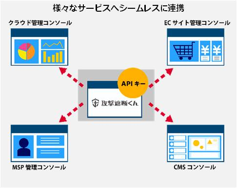
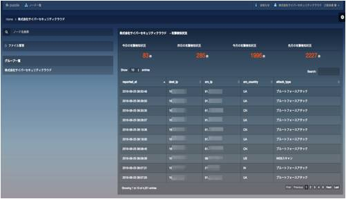

株式会社サイバーセキュリティクラウド（本社：東京都渋谷区、代表取締役：新田 憲佑、以下「サイバーセキュリティクラウド」）は、自社セキュリティサービス「攻撃遮断くん」のサービス提供後、初のAPI提供を開始いたしました。
API連携の第1弾として、JIG-SAW株式会社 (本社：東京都千代田区、代表取締役：山川真考、以下「JIG-SAW」) と協業し、クラウド型WAFのセキュリティサービス「攻撃遮断くん」とJIG-SAW提供の自動運用プラットフォーム「puzzle」とのシステム連携を行い、国内初となるセキュリティ監視とサーバ運用監視が可能なプラットフォームの提供を実現いたしました。
■API提供の背景
近年、政府機関や国内企業へのサイバー攻撃が急増しており、政府はこの状況を深刻に受け止め、2020年に行われる東京オリンピックも視野に入れ「サイバーセキュリティ基本法」を2014年11月に制定し、今後3年程度の基本的な施策の方向性を示しました。
2015年12月末には経済産業省から「サイバーセキュリティ経営ガイドライン」が公表され、サイバーセキュリティに関する取り組みを行うことが、企業経営にとって重要なものとなってきました。
また、内閣サイバーセキュリティセンター（NISC）では、サイバーセキュリティの重要性を端的に伝えるため、「知る・守る・続ける」をキャッチフレーズにサイバーセキュリティの啓蒙活動を行っています。
上記を受け弊社では、多くの企業の課題であるWEBサイトのセキュリティに特化し、その認知拡大を中期ビジョンに据えました。その取り組みの一環として、2015年11月に国内初となるリアルタイムのWEBサイト攻撃可視化ツール「攻撃見えるくん」をリリースし、無料で提供を開始いたしました。
また、今後3年間のビジョンとして「全てのWEBサイトにセキュリティ対策を」をキャッチフレーズに、世界中のWEBサイトへのセキュリティ対策を目指しています。

■サービス開始後 初のAPI提供
そしてこの度、WEBサイトのセキュリティをより一般的なものとするため、従来、別々に運用されることが多かったセキュリティ監視と親和性の高いサーバ運用監視プラットフォームや、クラウド管理コンソールとのシステム連携を目指し、第1弾として多くのクラウドシステムとの連携を行っている「puzzle」へAPI提供を行いました。
当社ではJIG-SAWへのAPI提供を皮切りに第2弾、第3弾の提供を予定しています。
今後も世界中の企業がサイバー攻撃の可視化を実現し、より効率的に安心安全なWEBサイト環境を構築できるよう業界各社とのシステム連携を実施してまいります。
※API提供の詳細は下記ページをご覧ください
https://shadan-kun.com/api/

■「puzzle」とのシステム連携
この度のシステム連携により「puzzle」上で「攻撃遮断くん」にて観測した攻撃ログの表示が可能になり、サーバの運用監視とセキュリティ監視を一元化し、弊社サービス以外の環境においてサイバー攻撃の可視化が可能になりました。
また、低価格で導入が可能な当社のセキュリティシステム「攻撃遮断くん」と「puzzle」とが連携することで、複雑なシステム連携や運用プロセスの大幅な軽減に繋がり、大手企業をはじめとして、セキュリティ対策にコストをかけにくい中小企業も一貫して対策を行うことが可能となりました。
■JIG-SAW株式会社 A&Aユニット長 尾崎博人氏からのコメント
この度、弊社A&A自動運用プラットフォーム「puzzle」において、攻撃見えるくん／攻撃遮断くんと連携したセキュリティ監視サービスで協業させていただき大変嬉しく思います。サイバー攻撃へのリアルタイム可視化についての対策ができることで、大事なお客様のシステムやデータ資産を保護することで、高いセキュリティを維持することができ、お客様のビジネス成長に大いに貢献できるものと期待しております。
■「攻撃遮断くん」とは
「攻撃遮断くん」は、WEBサーバへのあらゆる攻撃を遮断するクラウド型WAFのセキュリティサービスです。革新的な仕組みによりクラウド(IaaS)を含むほぼ全てのサーバに対応し、保守・運用に一切の手間をかけることなく24時間365日、ネットワーク、OS、Webアプリケーションへの攻撃を防ぎます。
NTTドコモ様をはじめ、官公庁、大手金融機関、大手航空会社、大手ECサイト、大手広告代理店など、国内トップクラスの250IP・1400サイト以上に導入いただいております。
■「puzzle」とは
「puzzle」はA&A（Auto Sensor-ing & Auto Direction）というコンセプトのもと、検知・取得する膨大なビッグデータの動き・揺らぎを検知し、さらに優先順位の判断、指示までのすべてを自動化できるように設計されたデータ・コントロール基盤プラットフォームです。
【サイバーセキュリティクラウド会社概要】
■会社名：株式会社サイバーセキュリティクラウド
■設立：2010年8月
■資本金：1億4,450万円 ※資本準備金を含む
■代表者：代表取締役 新田 憲佑
■事業内容：サイバーセキュリティ事業
(1)「攻撃見えるくん」「攻撃遮断くん」の開発・運用・保守・販売
(2) サイバー攻撃対策コンサルティング
■企業ホームページ ：http://www.cscloud.co.jp/
■サービスページ ：https://shadan-kun.com/
■API提供 概要ページ：https://shadan-kun.co/api/
【JIG-SAW会社概要】
■会社名：JIG-SAW株式会社
■設立：2001年11月
■資本金：3億1,410万円
■代表者：代表取締役 山川 真考
■事業内容：A&A Service事業
■企業ホームページ：https://www.jig-saw.com/
■サービスページ：https://ops.jig-saw.com/
【本件に関する報道関係者からの問い合わせ先】
株式会社サイバーセキュリティクラウド
担当：川島
TEL：03-5774-2538
E-Mail：pr@cscloud.co.jp